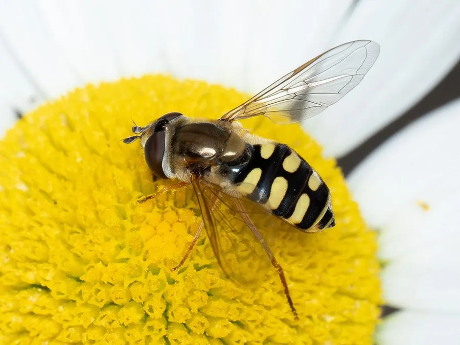

昆虫 · 动物界
大灰食蚜蝇 Eupeodes corollae

外形酷似蜜蜂的食蚜蝇，腹部有黄黑相间斑纹，成虫访花传粉，幼虫是捕食蚜虫的“活农药”，是农田里的益虫。
- 分类
- 门节肢动物门纲昆虫纲目双翅目科食蚜蝇科属食蚜蝇属
- 栖息环境
- 农田、果园、花园和草地，成虫访花，幼虫在蚜群附近活动
- 地理分布
- 欧亚大陆及北非，中国各地常见
- 保护级别
- 暂无评估
物种志
大灰食蚜蝇成虫体长 8–11 mm，体色灰黑，腹部有黄黑相间的横斑，外形酷似蜜蜂，但它只有一对翅膀，这是蝇类的典型特征。复眼大，雄蝇的两眼在头顶相接，雌蝇的两眼分离。
大灰食蚜蝇分布欧亚大陆及北非，中国各地常见。成虫访花吸蜜、传播花粉，常在花前悬停飞行；幼虫捕食蚜虫，一只幼虫一天能吃掉数十至上百头蚜虫，是重要的天敌昆虫，可用于农田和温室的生物防治。部分种群有长距离迁飞的现象，春季会从南方迁向北方。它在农田、果园和花园中都很常见，是观察昆虫生态的好对象。目前它没有IUCN 的正式评估，中国未将其列入国家重点保护野生动物名录。
形态与习性
- 食性成虫吸食花蜜，幼虫捕食蚜虫
- 体长8–11 mm
- 捕食量一只幼虫一天可吃掉数十至上百头蚜虫
- 繁殖雌蝇把卵产在蚜群附近的植物上
- 生态作用成虫传粉，幼虫是蚜虫的天敌，可用于生物防治
- 习性成虫善悬停，部分种群有长距离迁飞现象
趣味知识
- 大灰食蚜蝇只有一对翅膀，这是它与蜜蜂最明显的区别。
- 它的幼虫是蚜虫的天敌，一只幼虫一天能吃掉上百头蚜虫。
- 成虫会在花前悬停飞行，姿态像一架小直升机。